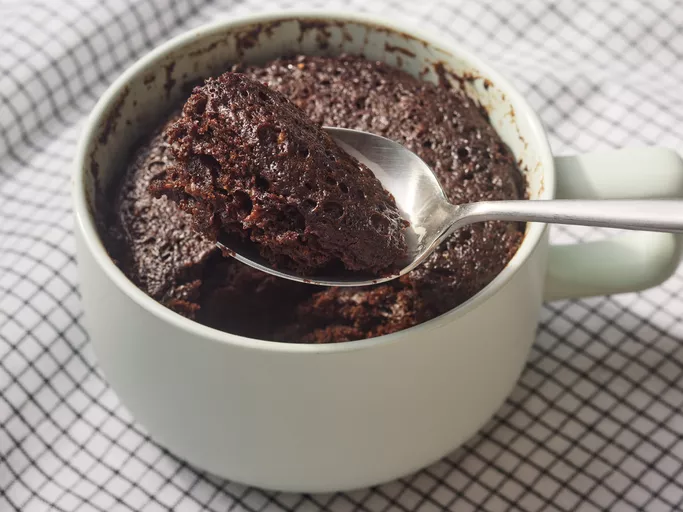

Cake Recipe

This chocolate mug cake is made in the microwave for a fudgy, chocolaty treat that is truly decadent. It's a great recipe for nights when I need a yummy dessert that's ready in less than 10 minutes! Add a few chocolate chips to make it extra rich and gooey.
Ingredients
- 1/4 cup All Purpose Flour
- 1/4 cup White Sugar
- 2 tablespoons Unsweetened Cocoa Powder
- 1/8 teaspoon Baking Soda
- 1/8 teaspoon Salt
- 3 tablespoons Milk
- 2 tablespoons Canola oil
- 1 tablespoon Water
- 1/4 teaspoon Vanilla Extract
Steps
- Mix all ingredients in a microwafe safe mug
- Microwafe until cake is done in the middle, about 1 minute 45 seconds
- Let cool
- Enjoy!